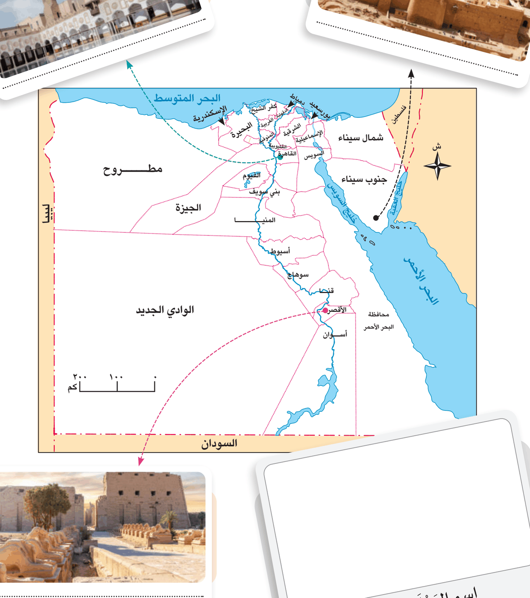

ملزمة المراجعة النهائية ليلة الامتحان • الدراسات الاجتماعية
الصف الرابع الابتدائي • الفصل الدراسي الأول 2025 / 2026
🌟 الكبسولة الجغرافية والتاريخية الشاملة: جميع المفاهيم، الخرائط الصماء، وأسرار التفوق

الشكل: وردة البوصلة ثلاثية الأبعاد لتحديد الاتجاهات الأصلية والفرعية على الخريطة
🔑 قاموس المفاهيم والمصطلحات الجغرافية والتاريخية الشامل:
| المفهوم | التعريف العلمي المعتمد للامتحان | الشرح والتوضيح بالبلدي |
|---|---|---|
| الخريطة | رسم توضيحي لسطح الأرض أو جزء منه باستخدام الرموز والألوان ومقياس رسم. | صورة مرسومة للبلد من فوق برموز عشان نعرف الأماكن. |
| مقياس الرسم | النسبة بين المسافة على الخريطة وما يقابلها على الطبيعة. | كل 1 سم على الخريطة بيساوي 100 كم في الحقيقة. |
| المصدر الأولي | كل ما تم نقشه أو تدوينه من قبل أشخاص عاصروا الحدث وقت وقوعه. | كتابة أو صور من الناس اللي عاشت الحدث بنفسها (برديات، آثار). |
| المصدر الثانوي | كل ما تم تدوينه بعد مرور زمن طويل من وقوع الحدث ويعتمد على الأولي. | كتب وموسوعات اتكتبت بعد سنين طويلة من الحدث. |
| الطقس | وصف حالة الجو لفترة زمنية قصيرة (يوم أو أسبوع) من حيث الحرارة والمطر والرياح. | جو النهاردة وبكرة هلبس صيفي ولا شتوي. |
| المناخ | وصف حالة الجو لفترة زمنية طويلة (فصل أو سنة) لتحديد نوع المحاصيل والأنشطة. | طبيعة جو البلد عموماً (مصر مناخها صحراوي حار). |
| الجزيرة | مساحة من اليابس تحيط بها المياه من جميع الجهات (مثل جزيرة شدوان). | أرض في نص المية والمية حواليها من كل حتة. |
| شبه الجزيرة | مساحة من اليابس تحيط بها المياه من 3 جهات فقط (مثل سيناء). | أرض المية حواليها من 3 جهات وليها جهة ماسكة في اليابس. |

📍 أهم 12 موقعاً على الخريطة لا يخلو منها أي امتحان:
1- البحر المتوسط: شمال مصر مباشرة يربطنا بأوروبا.
2- البحر الأحمر: شرق مصر وفروعه خليج السويس (غرباً) وخليج العقبة (شرقاً).
3- قناة السويس: بين البحرين المتوسط والأحمر لمرور السفن.
4- شبه جزيرة سيناء: أرض الفيروز وفيها أعلى قمة (جبل سانت كاترين).
5- نهر النيل: شريان الحياة، وفرعاه دمياط (شرقاً) ورشيد (غرباً).
6- بحيرة ناصر: جنوب مصر أمام السد العالي (أكبر بحيرة صناعية عذبة).
7- الصحراء الغربية: أكبر صحاري مصر وبها بحر الرمال العظيم والواحات.
8- جبل العوينات: أقصى جنوب غرب مصر على حدود ليبيا والسودان.
9- منخفض القطارة: ينخفض 134 متراً تحت سطح البحر (أخضر داكن).
10- العاصمة: محافظة القاهرة عند رأس الدلتا.
11- العاصمة الصيفية: محافظة الإسكندرية على البحر المتوسط.
12- الحدود الغربية والجنوبية: غرباً دولة ليبيا، وجنوباً دولة السودان.
2- البحر الأحمر: شرق مصر وفروعه خليج السويس (غرباً) وخليج العقبة (شرقاً).
3- قناة السويس: بين البحرين المتوسط والأحمر لمرور السفن.
4- شبه جزيرة سيناء: أرض الفيروز وفيها أعلى قمة (جبل سانت كاترين).
5- نهر النيل: شريان الحياة، وفرعاه دمياط (شرقاً) ورشيد (غرباً).
6- بحيرة ناصر: جنوب مصر أمام السد العالي (أكبر بحيرة صناعية عذبة).
7- الصحراء الغربية: أكبر صحاري مصر وبها بحر الرمال العظيم والواحات.
8- جبل العوينات: أقصى جنوب غرب مصر على حدود ليبيا والسودان.
9- منخفض القطارة: ينخفض 134 متراً تحت سطح البحر (أخضر داكن).
10- العاصمة: محافظة القاهرة عند رأس الدلتا.
11- العاصمة الصيفية: محافظة الإسكندرية على البحر المتوسط.
12- الحدود الغربية والجنوبية: غرباً دولة ليبيا، وجنوباً دولة السودان.
🎨 دليل ألوان خريطة التضاريس ومستويات الارتفاع:
- اللون البني الداكن: المرتفعات العالية جداً (الجبال الشاهقة مثل سانت كاترين والعوينات).
- اللون البني الفاتح: المناطق متوسطة الارتفاع (الهضاب والتلال مثل هضبة الجلف الكبير والتيه).
- اللون الأخضر: المناطق المنخفضة المستوية (السهول الساحلية والسهل الفيضي حول النيل).
- اللون الأخضر الداكن: المناطق المنخفضة تحت مستوى سطح البحر (المنخفضات مثل منخفض القطارة).
- اللون الأزرق: المسطحات المائية (البحار، الأنهار، البحيرات، والخلجان).
1- بما تفسر: أهمية موقع مصر الجغرافي المتميز؟
الإجابة: لأنها تقع في قلب قارات العالم القديم (آسيا وأفريقيا وأوروبا)، وتطل على بحرين هامين (المتوسط والأحمر) وبها قناة السويس مما جعلها مركزاً استراتيجياً للتجارة العالمية.
الإجابة: لأنها تقع في قلب قارات العالم القديم (آسيا وأفريقيا وأوروبا)، وتطل على بحرين هامين (المتوسط والأحمر) وبها قناة السويس مما جعلها مركزاً استراتيجياً للتجارة العالمية.
2- بما تفسر: حفر قناة السويس الجديدة عام 2015؟
الإجابة: لتقليل زمن مرور السفن من 20 ساعة إلى 11 ساعة، واستيعاب سفن أكبر حجماً، والسماح بالمرور في الاتجاهين دون توقف وزيادة الدخل القومي.
الإجابة: لتقليل زمن مرور السفن من 20 ساعة إلى 11 ساعة، واستيعاب سفن أكبر حجماً، والسماح بالمرور في الاتجاهين دون توقف وزيادة الدخل القومي.
3- بما تفسر: إنشاء العاصمة الإدارية الجديدة والمدن الذكية؟
الإجابة: لتخفيف الضغط السكاني والتكدس والازدحام عن مدينة القاهرة، وتطبيق معايير المدن الخضراء المستدامة الصديقة للبيئة.
الإجابة: لتخفيف الضغط السكاني والتكدس والازدحام عن مدينة القاهرة، وتطبيق معايير المدن الخضراء المستدامة الصديقة للبيئة.
4- بما تفسر: ضرورة احترام علم مصر ورفعه عالياً؟
الإجابة: لأن العلم رمز لسيادة الدولة وشرفها وتاريخها الوطني وكفاح شعبها، وإهانته جريمة يعاقب عليها القانون المصري.
الإجابة: لأن العلم رمز لسيادة الدولة وشرفها وتاريخها الوطني وكفاح شعبها، وإهانته جريمة يعاقب عليها القانون المصري.
5- ما النتائج المترتبة على: بناء السد العالي في جنوب مصر؟
الإجابة: حماية مصر من خطر الفيضانات وحمايتها من الجفاف في سنوات انخفاض النيل، وتوليد الكهرباء المائية النظيفة.
الإجابة: حماية مصر من خطر الفيضانات وحمايتها من الجفاف في سنوات انخفاض النيل، وتوليد الكهرباء المائية النظيفة.
🏆 رسالة التميز والدرجة النهائية (30 / 30):
الدراسات هي حكاية مصر الجميلة وتاريخها العظيم.. اقرأ كل سؤال بهدوء وبص على الخريطة كويس واستمتع بكل معلومة.. الدرجة النهائية في انتظارك يا بطل!